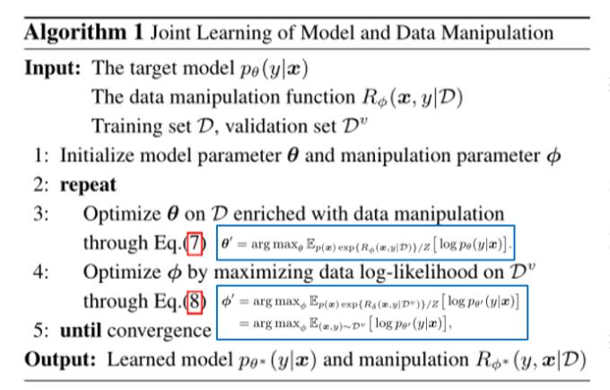
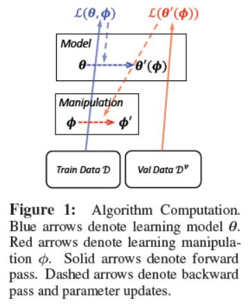
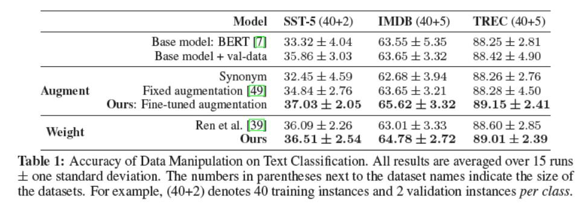
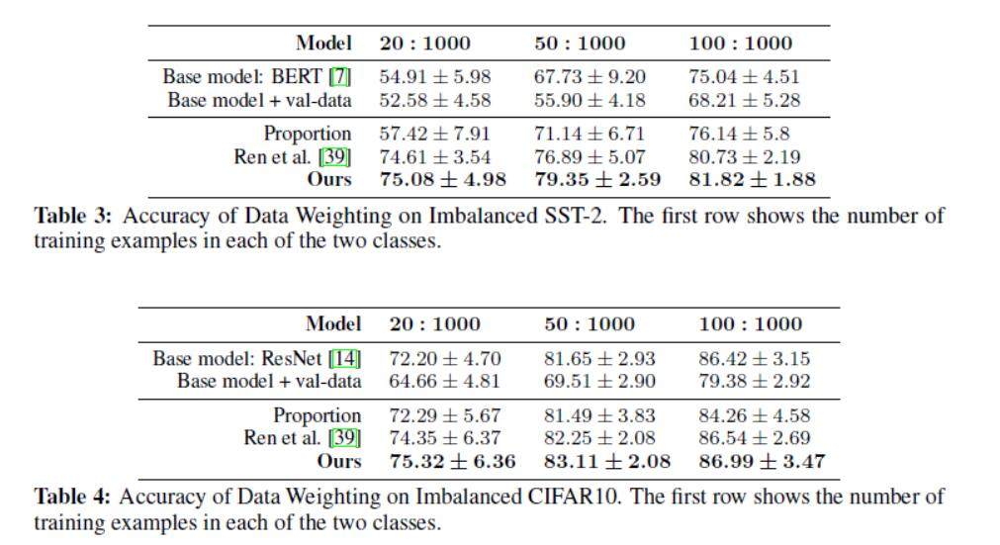

用强化学习的方法学习数据操作，进行数据增强与数据加权，这里同时也是模型和数据操作方法一起学习
这篇文章涉及到挺多强化学习和信息论中的内容，掌握不是很好，中间夹杂着一些我自己的理解，可能会有一些错误
作者来自Carnegie Mellon University, Petuum Inc
Data和Reward的等效性
输入$x$，输出$y$，模型$p_{\theta}(y|x)$可以看做是一种policy，$y$被看做是action，$x$是state，policy(model)根据state $x$ 给出action $y$
$R(x,y|\mathcal{D})$作为Reward函数，$\mathcal{D}$为supervised的训练数据，$p(x)$是根据经验$\mathcal{D}$得到的一个数据分布。
策略优化函数(RL-as-inference, MPO)
$\textup{KL}(\cdot \parallel\cdot)$ is the Kullback–Leibler divergence KL散度，$\textup{H}(\cdot)$是Shannon entropy;香农熵，均来自信息论
$\alpha,\beta>0$ 是用于平衡权重的参数
KL所谓KL散度，是指当某分布q(x)被用于近似p(x)时的信息损失。也就是说，q(x)能在多大程度上表达p(x)所包含的信息，KL散度越大，表达效果越差
在这里也就是让$p(x)p_{\theta}(y|x)$与$q(x,y)$接近，$q(x,y)$是真正的对应关系，$p_{\theta}(y|x)$是policy控制的对应关系，这个部分也就是想让$p_{\theta}(y|x)$学习到真正的数据分布，也就是dataset中的分布（因为dataset中的分布通常认为是当前任务的分布）
香农熵也就是信息熵
是一个正则项，也是一个期望，这里是一个用于平滑的正则项
MPO
后续的求解涉及到一个拉格朗日乘子法与KKT条件优化，后面推导出E-step
优化$\theta$
EM优化，最大化期望(Expectation Maximization)，这个就是用来不断迭代更新$\theta$的方法
这是一个不断迭代更新$q(x,y)$和$\theta$的过程，首先得到一个分布$q(x,y)$，然后认为数据服从该分布，$(x,y)$服从$q’(x,y)$，最大化$p_{\theta}(y|x)$对数似然估计的期望（这里选取对数似然估计就是要将每个元素的条件概率连成变成求和的形式方便计算），也就是从$q$中sample出一对数据，让这个模型预测出来的概率最大。这里$Z$是一个正则项
EM优化
让$\alpha\rightarrow 0, \beta=1$，然后Reward长这个形式
这样的话M-step就变成了
也就是只有当$x,y$在数据集$\mathcal{D}$中产生，这样就不能生成新的数据了，所有后面就要去优化Reward，让$q$产生服从分布的新数据
优化Reward
强化学习中基于梯度下降的求Reward的方法很多，这里比较相关的就是内部的intrinsic reward和extrinsic reward，Reward函数的参数为$\phi$，$\theta$是由$\phi$进行更新的，所以$\theta$可以看做是一个关于$\phi$的函数，然后朝着让reward最大的方向做梯度上升
$\mathcal{L}^{ex+in}$就是内部和外部reward的和，更新$\phi$的时候
只用到了外部的reward，自己的理解：
这所谓的内部 reward和外部reward其实就是在训练集上的和验证集上的，有点像元学习中的support set和query set，但是在$\theta$更新的时候是两者都用到了，而元学习是每次用一个
所以在这种情况下的更新就是先找一个$p$，优化$\theta$，得到一个$\phi$，优化$\phi $
流程


实验1
作者在两个方面进行了实验，一个是数据增强，一个是数据加权
在NLP领域的文本分类任务做的实验

两种方法，数据增强与同义词替换和固定标签的两种方法进行对比，数据加权与每轮重新估计权重的一个方法进行对比
实验1方法
这里$\phi$其实就是LM（Language Model）的参数，用作数据增广，只有当$y$为真实标签，且$x$是用LM中增广得到的句子时，才为1，其他情况都为$-\infty$，然后更新模型的$\theta$，再更新$\phi$
实验2
第二个实验是在小样本任务上的

主要解决的是类别不平衡的问题，一个是文本分类一个是图片分类任务，可以看到都达到了不错的效果
实验2
这里直接让$\phi$为数据的权重，$\phi_i$就是第$i$条数据的权重
因为自己之前关于相关领域的内容了解并不深刻，这篇论文并未进行复现